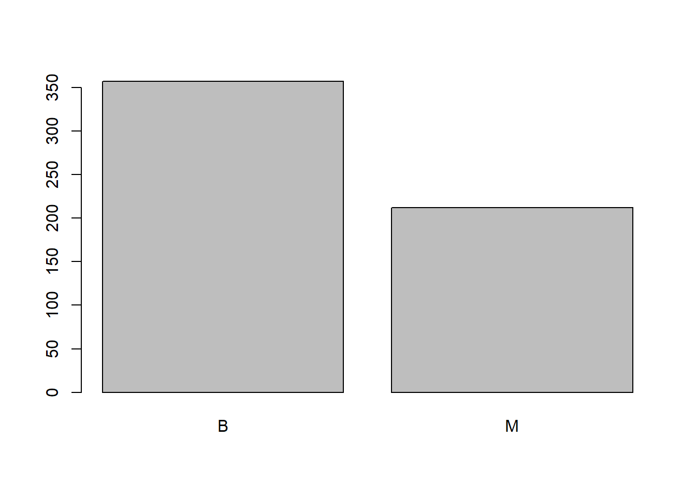
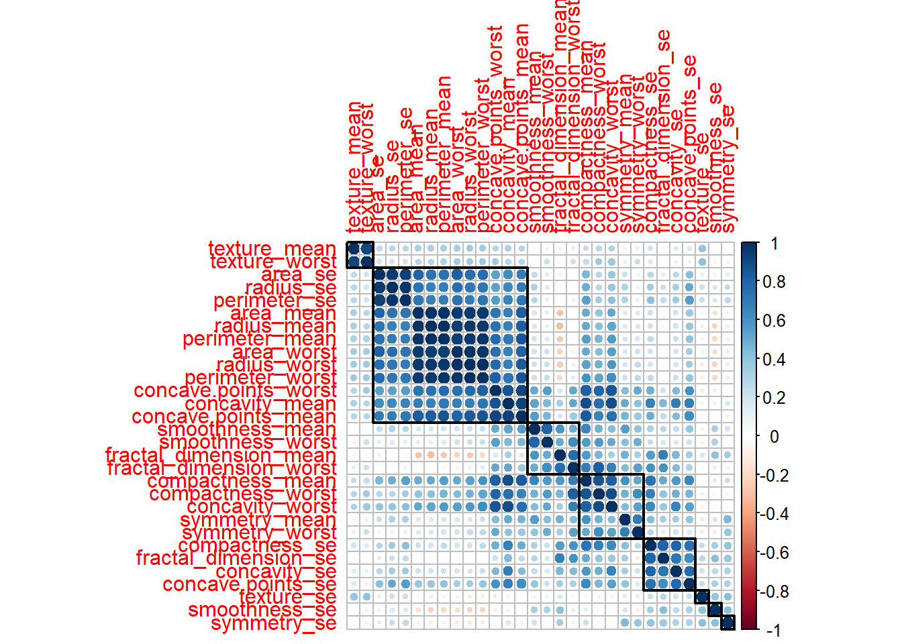

library(tidyverse)library(tidymodels)library(xgboost)library(doParallel)library(caret)#install.packages('glmnet', dependencies=TRUE, type="binary")library(glmnet)seed =3# because we're three pros working on this project!target_metric ='recall'# measure of model performance# Used to speed up XGBoost with parallel processingall_cores =detectCores(logical =TRUE)cl =makePSOCKcluster(all_cores)registerDoParallel(cl)# Preprocessingdata =read.csv('BreastCancer.csv') # load data (there is an NA col nameed X)sum(is.na(data$X)) # so col X is only NA lets remove it
[1] 569
data = data %>%select(-X)any(is.na(data)) # there are no NA rows in the data set
[1] FALSE
Okay… Let’s go!
prop.table(table(data$diagnosis))
B M
0.6274165 0.3725835
barplot(table(data$diagnosis)) # simple bar plot showing beningn/malignant dist

# Feature selection? Not really neededdim(data)
[1] 569 32
df_corr <-cor(data %>%select(-id, -diagnosis))corrplot::corrplot(df_corr, order ="hclust", tl.cex =1, addrect =8)

data2 <- data %>%select(-findCorrelation(df_corr, cutoff =0.9))detach("package:caret", unload =TRUE)
# For model evaluation it is easiest to set the positive (malignant) as fist leveldata$diagnosis =factor(data$diagnosis, levels =c('M', 'B'))data =bind_cols(data %>%select(diagnosis), data2)# Creating train/test splitsset.seed(seed)training_split =initial_split(data, prop =0.8, strata = diagnosis)train =training(training_split)test =testing(training_split) # we don't really need this since we use last_fit()# Create tuning recipetune_rec =recipe(diagnosis ~ ., data = train)# Specify k-fold CV (10-fold)set.seed(seed)folds =vfold_cv(train, v =10)# XGBoost model specificationxg_spec =boost_tree(trees =tune()) %>%set_engine("xgboost") %>%set_mode("classification")# XGBoost work flowxg_wf =workflow() %>%add_recipe(tune_rec) %>%add_model(xg_spec)# Lambda grid for model tuninglambda_grid =grid_regular(trees(range =c(1, 1000)), # set tree rangelevels =c(trees =1000) # and levels (how many steps in tree range))# Model trainingmetrics =metric_set(f_meas, precision, recall, roc_auc) # specify metricsstart =Sys.time() # Get some duration infopaste('Start:', start)
[1] "Start: 2024-02-27 12:07:48.505227"
set.seed(seed)xg_rs =tune_grid( # specify individual components with tune_grid xg_wf, # workflow to be used folds, # different foldsgrid = lambda_grid, # lambda grid for tuningcontrol =control_resamples(save_pred =TRUE), # save all metrics (not just default)metrics = metrics # specify metrics)print(Sys.time() - start) # How long did the training take?
Time difference of 22.58243 secs
collect_metrics(xg_rs, summarize =TRUE) # get model metrics
best_model =select_by_pct_loss(xg_rs, metric = target_metric, trees) # 'best' simple model (according to metric) - select_best() gives best model (more complex)
Warning in 1:best_index: numerical expression has 2 elements: only the first
used
print(best_model)
# A tibble: 1 × 9
trees .metric .estimator mean n std_err .config .best .loss
<int> <chr> <chr> <dbl> <int> <dbl> <chr> <dbl> <dbl>
1 13 recall binary 0.934 10 0.0221 Preprocessor1_Model0… 0.952 1.83
# Use best model for finalizationxg_wf_final =finalize_workflow( xg_wf, best_model )# Get model performance on test splitxg_final =last_fit( xg_wf_final, training_split, metrics = metrics )collect_metrics(xg_final)
# Save... a bit unnecessary since training only takes a few seconds# saveRDS(xg_final, "model_xgboost_feature_selected.RDS")collect_predictions(xg_final) %>%select(-.config)
# A tibble: 115 × 6
id .pred_class .row .pred_M .pred_B diagnosis
<chr> <fct> <int> <dbl> <dbl> <fct>
1 train/test split M 7 0.988 0.0123 M
2 train/test split M 9 0.971 0.0287 M
3 train/test split M 26 0.988 0.0123 M
4 train/test split M 27 0.978 0.0219 M
5 train/test split M 34 0.988 0.0123 M
6 train/test split B 39 0.388 0.612 M
7 train/test split M 43 0.988 0.0123 M
8 train/test split M 48 0.915 0.0847 M
9 train/test split M 55 0.977 0.0225 M
10 train/test split B 56 0.0199 0.980 B
# ℹ 105 more rows
# Tuning for choosing best penalty - although pretty good already# model tuningtune_spec <-logistic_reg(penalty =tune(), mixture =1) %>%set_mode("classification") %>%set_engine("glmnet")# create a regular grid of values to try# grid_refuls chooses sensible values to try for regularization penaltylambda_grid <-grid_regular(penalty(), levels =30)lambda_grid
# Chosen terms: concave points(worst and mean), and worst measures for smoothness, symmetry, radius and texture. Worst measure for concave points its the most important predictor.# Evaluate on test data lasso_final <-last_fit(final_lasso, split = training_split, metrics = metrics)collect_metrics(lasso_final, summarize =TRUE)